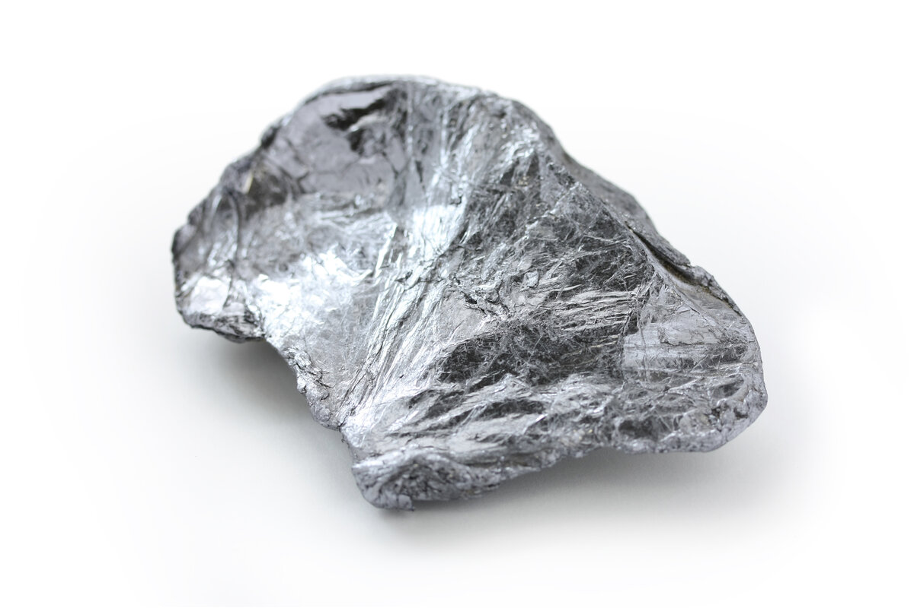

Молибден
Молибде́н (химический символ — Mo, от лат. Molybdaenum) — химический элемент 6-й группы (по устаревшей классификации — побочной подгруппы шестой группы, VIB), пятого периода периодической системы химических элементов Д. И. Менделеева, с атомным номером 42.
Дисульфид молибдена MoS2 – минерал молибденит, или молибденовый блеск, был известен древним грекам и римлянам. До середины 18 в. минерал не отличали от свинцового блеска (галенита PbS) и графита из-за их внешнего сходства; мягкость молибденита позволяла использовать его в качестве грифеля. В средневековой Европе эти три минерала (PbS, MoS2 и графит) имели одно название – Molybdaena (от греч. μόλυβδος, обозначавшего как свинец, так и любой другой мягкий материал). В 1758 г. шведский минералог А. Кронстедт предположил, что графит, галенит и молибденовый блеск – три различных вещества. В 1778 г. К. Шееле, исследуя молибденит, выделил оксид неизвестного элемента и назвал новый элемент молибден (от названия минерала); в 1782 г. шведский химик П. Гьельм выделил металлический молибден при нагревании оксида MoO3 с древесным углём. Промышленное производство молибдена относится к началу 20 в., когда была разработана технология получения металла методами порошковой металлургии.

Молибден – блестящий светло-серый тугоплавкий металл; кристаллическая решётка кубическая объёмноцентрированная; tпл 2623 °C, tкип 4639 °C. При 20 °С: плотность 10 280 кг/м3, теплопроводность 139 Вт/(м·К), температурный коэффициент линейного расширения 4,8·10–6 К–1, удельное электрическое сопротивление 5·10–8 Ом·м, удельная магнитная восприимчивость 1,56·10–9 м3/кг (парамагнитен), температура перехода в сверхпроводящее состояние 0,915 К. Механические свойства молибдена в большой степени зависят от чистоты металла и способа его предварительной механической и термической обработки. Так, твёрдость по Бринеллю для спечённых штабиков 1,5–1,6 ГПа, для кованых прутков 2,0–2,5 ГПа, для отожжённой проволоки 1,4–1,9 ГПа. Модуль упругости 285–300 ГПа. В компактном состоянии чистый молибден пластичен, ковок, тягуч, легко подвергается штамповке и прокатке.
Около 75 % производимого молибдена используют для легирования сталей; остальное количество – как компонент жаропрочных и антикоррозионных сплавов, для изготовления деталей электровакуумных приборов и испарительных установок, нагревательных элементов высокотемпературных печей, как конструкционный материал, для молибденирования поверхности металлических изделий. Соединения молибдена применяют в производстве лаков и красок, микроудобрений, как катализаторы в химической и нефтехимической промышленности и прочее; MoS2 – как эффективный смазочный материал (область использования от –40 до 350 °С).